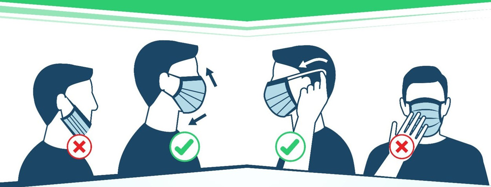

Mümkün olduğu kadar yurtdışına yolculuk yapılmaması önerilmektedir. Yurtdışına çıkışın zorunlu olduğu durumlarda aşağıdaki kurallara dikkat edilmelidir:
Akut solunum yolu enfeksiyonlarının genel bulaşma riskini azaltmak için önerilen temel ilkeler Yeni Koronavirüs Hastalığı (COVID-19) için de geçerlidir. Bunlar;
- El temizliğine dikkat edilmelidir. Eller en az 20 saniye boyunca sabun ve suyla yıkanmalı, sabun ve suyun olmadığı durumlarda alkol bazlı el antiseptiği kullanılmalıdır. Antiseptik veya antibakteriyel içeren sabun kullanmaya gerek yoktur, normal sabun yeterlidir.
- Eller yıkanmadan ağız, burun ve gözlerle temas edilmemelidir.
- Hasta insanlarla temastan kaçınmalıdır (mümkün ise en az 1 m uzakta bulunulmalı).
- Özellikle hasta insanlarla veya çevreleriyle doğrudan temas ettikten sonra eller sık sık temizlenmelidir.
- Hastaların yoğun olarak bulunması nedeniyle mümkün ise sağlık merkezlerine gidilmemeli, sağlık kuruluşuna gidilmesi gereken durumlarda diğer hastalarla temas en aza indirilmelidir.
- Öksürme veya hapşırma sırasında burun ve ağız tek kullanımlık kağıt mendil ile örtülmeli, kağıt mendilin bulunmadığı durumlarda ise dirsek içi kullanılmalı, mümkünse kalabalık yerlere girilmemeli, eğer girmek zorunda kalınıyorsa ağız ve burun kapatılmalı, tıbbi maske kullanılmalıdır.
- Çiğ veya az pişmiş hayvan ürünleri yemekten kaçınılmalıdır. İyi pişmiş yiyecekler tercih edilmelidir.
- Çiftlikler, canlı hayvan pazarları ve hayvanların kesilebileceği alanlar gibi genel enfeksiyonlar açısından yüksek riskli alanlardan kaçınılmalıdır.
- Seyahat sonrası 14 gün içinde herhangi bir solunum yolu semptomu olursa maske takılarak en yakın sağlık kuruluşuna başvurulmalı, doktora seyahat öyküsü hakkında bilgi verilmelidir.
Ek Öneriler
Her ne kadar elleri yıkamadan ağız, burun ve gözlere temas edilmemelidir desek de normalde de dokunmamaya çalışın. Bu harekete kendinizi alıştırın
Temizliğe dikkat edin. Sıklıkla dokunduğunuz yüzeyleri dezenfekte edin. Kıyafetlerinizi 60°C de yıkayın.
Sadece hasta insanlarla değil dışarıdaysanız sosyal mesafe kuralına uyun. Aranıza en az 1 metre olmasına dikkat edin.
Alışveriş sonrası aldığınız ürünleri "5 gün kuralı" adını verdiğim bir uygulama ile bekletebilirsiniz. Onun haricinde altdaki videodaki önerileri de takip edebilirsiniz
Bu önerim bireysel korunmadan ziyade sosyal bir davranış olarak görün. Siz dışarı alışverişe çıkabilirsiniz ama yaşlılar çıkamamakta risk grubu daha yüksek olduğu için. Alışverişe çıktığınızda yaşlı komşularınızında alışverişini yapmanızı rica edeceğim.
Maske nasıl kullanılmalı
Artık kullanılmalı mı kimler kullanmalı tartışmasını bir kenara bırakalım. Dışarı çıkıyorsak takmak zorundayız. O yüzden dışarı çıkıyorsanız maskenizi takın. Özellikle göstermelik olsun diye maskeyi takıyormuş gibi boynunda taşımak pek mantıklı bir hareket değil.
Takma mevzusunu çözdüysek bir diğer sorunumuzda nasıl takmamız gerektiği. Maskeyi aşağıdaki görsellerde de betimlendiği gibi takmamız gerek. Burunu açıkta bırakma gibi takış biçimlerine ben "çeneyi koruyan maske" gibi isimler taktım. Bu şekilde takanları lütfen uyarın ve tabi ki siz de yapmayın.
 Maske kullanımıÖnemli bir nokta ise maskeye dokunmamak. Maskeyi taktıgınız yerlerden çıkarmanız.
Bu pandemi sırasında toplum olarak salgını kontrol altına alabilmemiz için tedbirlerimizi almamızı ve gerçekten gerekmedikçe dışarı çıkmamamız gerek unutmayın. #EVDEKAL